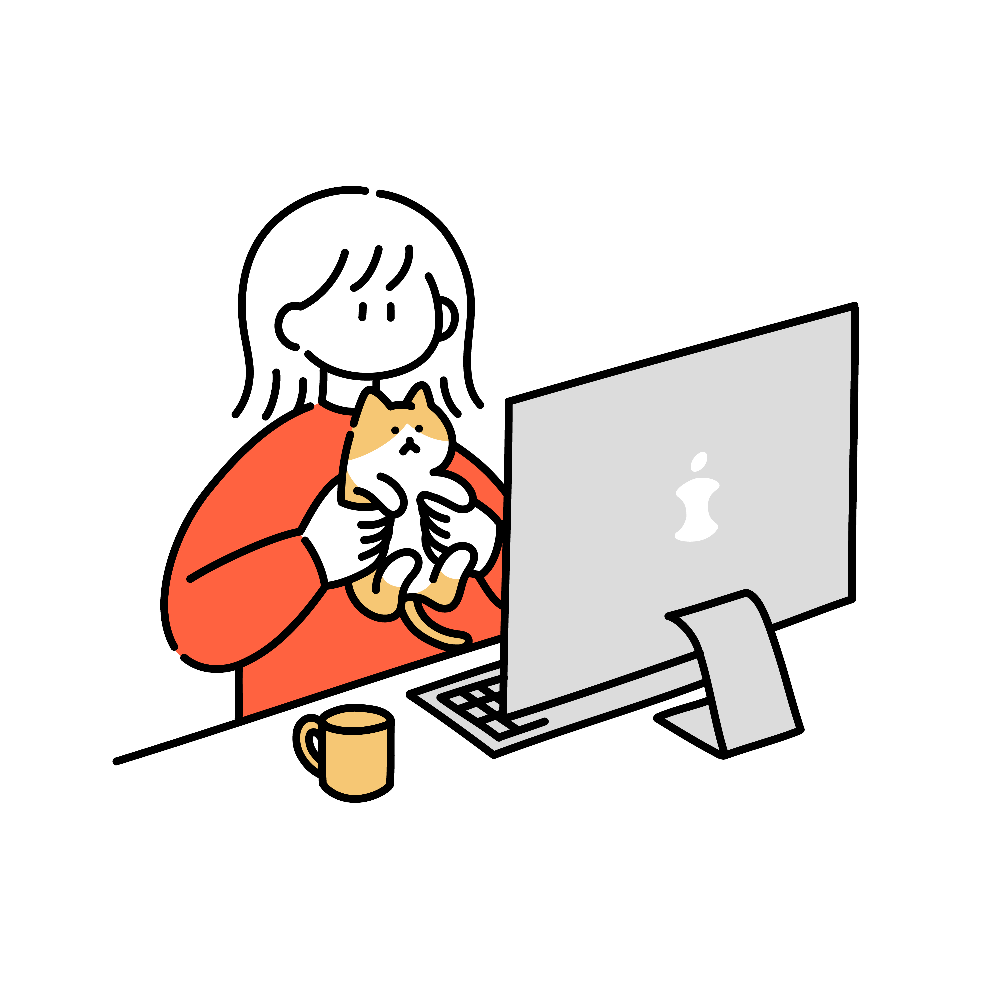

- 自分のデザインを世界中に発信出来る
- SNSの普及やオンラインでのコミュニケーションの増加により、自分の作品を世界中の人々に見てもらえるチャンス、専門家や他のクリエイターとつながるチャンスが広がっています。斬新なデザインで人をあっと驚かせたり、無名なサービスを世の中に広めたり、Webサイトには様々な可能性があります。世界中の反応をダイレクトに受けられることは、Webデザインの大きなやりがいです。
Web業界の魅力
- ライフスタイルに合わせた働き方ができる
- 例えば、自宅で仕事をするなど、自由に働く場所を選ぶことが可能なこともWeb業界の魅力です。また、プログラミング言語はほぼ世界共通のため、海外でグローバルな働き方ができる可能性もあります。起業してみたい、主婦や子育てをしながら少しでも働きたい、退職したあとも働きたいなど、Web業界では自分のライフスタイルに合わせた働き方を見つけることができます。
- 市場規模が拡大している
- Web業界は電子書籍やオンラインゲーム、SNSなど様々なサービスが展開されており、いずれも拡大傾向にあります。さらに、コロナの影響により特にeコマースの領域で需要が高まっています。フードデリバリーが爆発的に流行したり、生活必需品の購入を通販に切り替えたり、ライフスタイルの大きな変化にWebサービスが密接しています。
主な職種
- Webプロデューサー
- Webサイトのターゲットやコンセプト、イメージを顧客と相談しながら作り上げ、納期や予算、人員を管理しながらプロジェクト全体を統括する。Webの専門知識・営業力・交渉力・運営と管理の能力などが求められる。
- Webディレクター
- クライアントの要望にかなったWebコンテンツを作り上げるため、プロジェクトの進行管理者としてプロジェクトを監督・指揮・管理する。IT全般の基本知識・コミュニケーション能力・相手の要望を引き出すヒアリング力などが求められる。
- Webデザイナー
- クライアントがイメージするWebサイトのコンセプトに合わせて、見やすく使い勝手の良いWebサイトのデザインを作る。デザイン関連の知識・コミュニケーション能力・デザイン制作のツールを使いこなす技術力などが求められる。
- Webエンジニア
- 設計書に沿ってプログラミングすることで、クライアントの要望通りのシステムを実現するために作業を進める。「Java」「PHP」「JavaScript」「Ruby」などさまざまなプログラム言語を操るスキルが求められる。
- Webマーケター
- 商品やサービスを売るため、Webサービスの販促活動や集客、ブランド認知向上のためのマーケティングを行う。情報収集能力・情報分析能力・企画力・コミュニケーション能力などが求められる。
